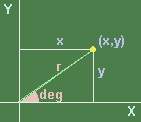

Guess the coordinates of a point
Consider the point as shown right.
Its coordinates may be discribed by two ways.
One is in the rectangular (x,y) form, and other in the polar (r,deg) form.
The purpose of this applet is to convert between (x,y) and (r,deg) easily.

Applet